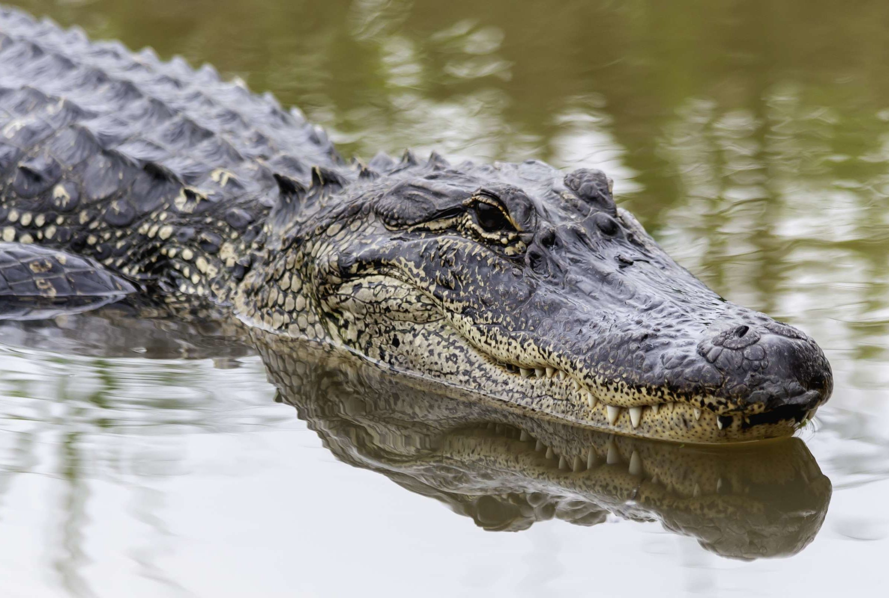

Bears
- Oli
- Mona
Bears are one of the smartest creatures. They can walk on their hind legs and have thick coats.

Bears are one of the smartest creatures. They can walk on their hind legs and have thick coats.
Giraffes are the tallest living land animal and their long necks help them spot predators.
Lions grow their manes the older they get. They also hunt during the night as their eyes have adapted to the dark.

Monkeys are selective with the trees they choose to sleep on. They also groom one another as a way to strengthen relationships.
Alligators can be 10 to 15 feet long and live in rivers, lakes, and ponds.
